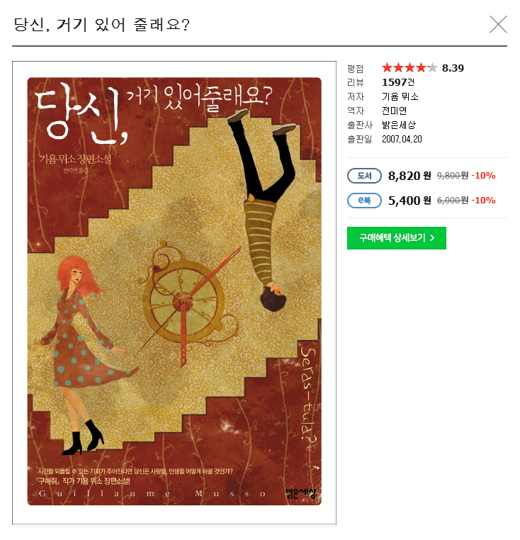

책 리뷰
당신, 거기있어줄래요?
이 삶을 다시 한번
살고 싶다는 농담
당신, 거기있어줄래요?
저자:기욤뮈소

책소개
2007년 04월 20일 출판한 기욤뮈소의 소설이며,
이를 원작으로한 대한민국의 영화가 2016년에 개봉했다.
30년 전, 첫사랑을 만날 기회가 주어진다.
'만약 우리에게 시간을 되돌릴 기회가 주어진다면, 인생을 어떻게 바꿀 것인가?'
죽은 일리나를 살려내면서 엘리엇의 삶은 점점 예기치 못한 대혼란의 소용돌이 속으로 휩쓸려간다..